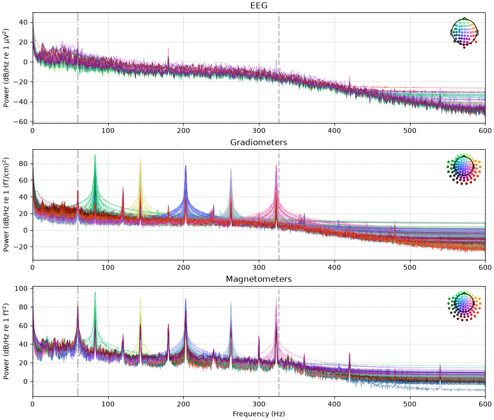
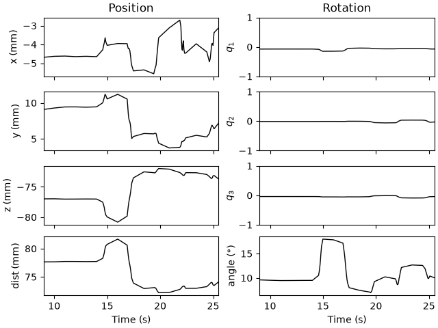
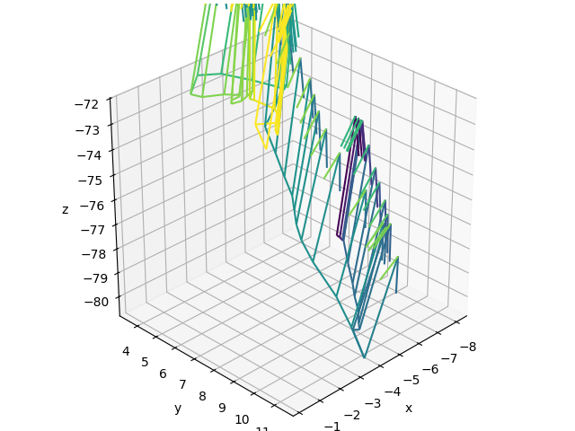
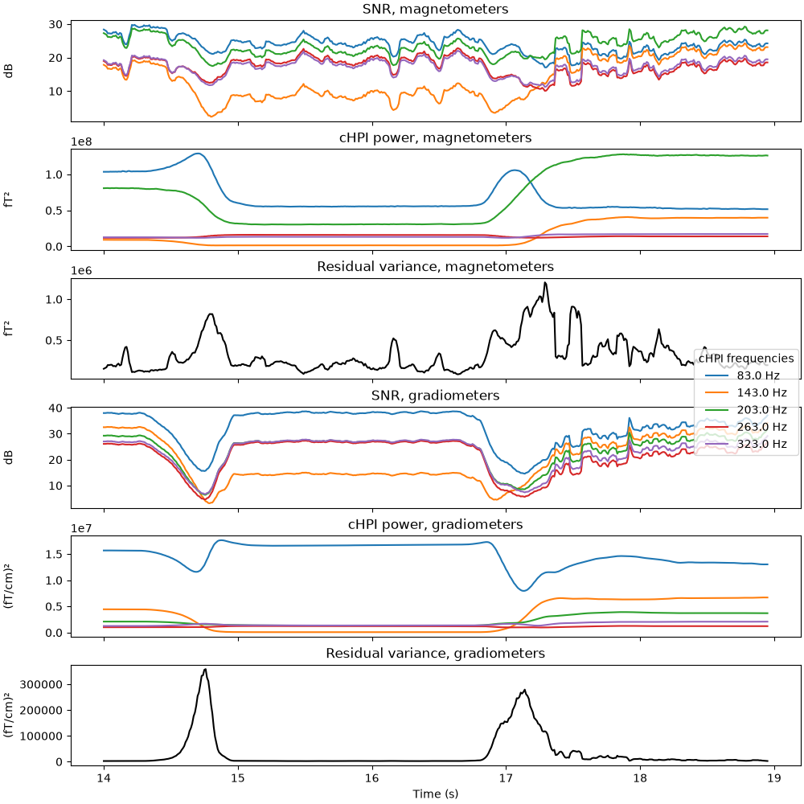

Note
Go to the end to download the full example code.
Extracting and visualizing subject head movement#
Continuous head movement can be encoded during MEG recordings by use of HPI coils that continuously emit sinusoidal signals. These signals can then be extracted from the recording and used to estimate head position as a function of time. Here we show an example of how to do this, and how to visualize the result.
HPI frequencies#
First let’s load a short bit of raw data where the subject intentionally moved their head during the recording. Its power spectral density shows five peaks (most clearly visible in the gradiometers) corresponding to the HPI coil frequencies, plus other peaks related to power line interference (60 Hz and harmonics).
# Authors: Eric Larson <larson.eric.d@gmail.com>
# Richard Höchenberger <richard.hoechenberger@gmail.com>
# Daniel McCloy <dan@mccloy.info>
#
# License: BSD-3-Clause
# Copyright the MNE-Python contributors.
from os import path as op
import mne
data_path = op.join(mne.datasets.testing.data_path(verbose=True), "SSS")
fname_raw = op.join(data_path, "test_move_anon_raw.fif")
raw = mne.io.read_raw_fif(fname_raw, allow_maxshield="yes").load_data()
raw.compute_psd().plot(picks="data", exclude="bads", amplitude=False)

Opening raw data file /home/circleci/mne_data/MNE-testing-data/SSS/test_move_anon_raw.fif...
Read a total of 12 projection items:
mag.fif : PCA-v1 (1 x 306) idle
mag.fif : PCA-v2 (1 x 306) idle
mag.fif : PCA-v3 (1 x 306) idle
mag.fif : PCA-v4 (1 x 306) idle
mag.fif : PCA-v5 (1 x 306) idle
mag.fif : PCA-v6 (1 x 306) idle
mag.fif : PCA-v7 (1 x 306) idle
grad.fif : PCA-v1 (1 x 306) idle
grad.fif : PCA-v2 (1 x 306) idle
grad.fif : PCA-v3 (1 x 306) idle
grad.fif : PCA-v4 (1 x 306) idle
Average EEG reference (1 x 60) idle
Range : 10800 ... 31199 = 9.000 ... 25.999 secs
Ready.
Reading 0 ... 20399 = 0.000 ... 16.999 secs...
Effective window size : 1.707 (s)
Plotting power spectral density (dB=True).
We can use mne.chpi.get_chpi_info to retrieve the coil frequencies,
the index of the channel indicating when which coil was switched on, and the
respective “event codes” associated with each coil’s activity.
chpi_freqs, ch_idx, chpi_codes = mne.chpi.get_chpi_info(info=raw.info)
print(f"cHPI coil frequencies extracted from raw: {chpi_freqs} Hz")
Using 5 HPI coils: 83 143 203 263 323 Hz
cHPI coil frequencies extracted from raw: [ 83. 143. 203. 263. 323.] Hz
Estimating continuous head position#
First, let’s extract the HPI coil amplitudes as a function of time:
Using 5 HPI coils: 83 143 203 263 323 Hz
Line interference frequencies: 60.0 120.0 180.0 240.0 300.0 360.0 Hz
Using time window: 83.3 ms
Fitting 5 HPI coil locations at up to 1696 time points (17.0 s duration)
0%| | cHPI amplitudes : 0/1696 [00:00<?, ?it/s]
0%| | cHPI amplitudes : 1/1696 [00:03<1:31:51, 3.25s/it]
1%| | cHPI amplitudes : 17/1696 [00:03<05:07, 5.46it/s]
2%|▏ | cHPI amplitudes : 34/1696 [00:03<02:28, 11.16it/s]
3%|▎ | cHPI amplitudes : 47/1696 [00:03<01:45, 15.68it/s]
4%|▎ | cHPI amplitudes : 61/1696 [00:03<01:18, 20.76it/s]
5%|▍ | cHPI amplitudes : 78/1696 [00:03<00:59, 27.18it/s]
6%|▌ | cHPI amplitudes : 95/1696 [00:03<00:47, 33.86it/s]
7%|▋ | cHPI amplitudes : 111/1696 [00:03<00:39, 40.36it/s]
7%|▋ | cHPI amplitudes : 126/1696 [00:03<00:33, 46.68it/s]
8%|▊ | cHPI amplitudes : 141/1696 [00:03<00:29, 53.25it/s]
9%|▉ | cHPI amplitudes : 156/1696 [00:03<00:25, 60.04it/s]
10%|█ | cHPI amplitudes : 172/1696 [00:03<00:22, 67.56it/s]
11%|█ | cHPI amplitudes : 187/1696 [00:03<00:20, 74.83it/s]
12%|█▏ | cHPI amplitudes : 202/1696 [00:03<00:18, 82.36it/s]
13%|█▎ | cHPI amplitudes : 217/1696 [00:03<00:16, 90.14it/s]
14%|█▎ | cHPI amplitudes : 232/1696 [00:03<00:14, 98.20it/s]
15%|█▍ | cHPI amplitudes : 247/1696 [00:03<00:13, 106.48it/s]
15%|█▌ | cHPI amplitudes : 262/1696 [00:03<00:12, 115.02it/s]
16%|█▋ | cHPI amplitudes : 277/1696 [00:03<00:11, 123.83it/s]
17%|█▋ | cHPI amplitudes : 292/1696 [00:03<00:10, 132.86it/s]
18%|█▊ | cHPI amplitudes : 307/1696 [00:03<00:09, 142.16it/s]
19%|█▉ | cHPI amplitudes : 322/1696 [00:03<00:09, 151.75it/s]
20%|█▉ | cHPI amplitudes : 337/1696 [00:03<00:08, 161.56it/s]
21%|██ | cHPI amplitudes : 352/1696 [00:03<00:07, 171.63it/s]
22%|██▏ | cHPI amplitudes : 367/1696 [00:03<00:07, 181.94it/s]
23%|██▎ | cHPI amplitudes : 382/1696 [00:03<00:06, 192.51it/s]
23%|██▎ | cHPI amplitudes : 397/1696 [00:03<00:06, 203.34it/s]
24%|██▍ | cHPI amplitudes : 412/1696 [00:03<00:05, 214.36it/s]
25%|██▌ | cHPI amplitudes : 427/1696 [00:03<00:05, 225.57it/s]
26%|██▌ | cHPI amplitudes : 442/1696 [00:03<00:05, 237.08it/s]
27%|██▋ | cHPI amplitudes : 457/1696 [00:03<00:04, 248.72it/s]
28%|██▊ | cHPI amplitudes : 472/1696 [00:03<00:04, 260.53it/s]
29%|██▉ | cHPI amplitudes : 488/1696 [00:03<00:04, 273.45it/s]
30%|██▉ | cHPI amplitudes : 503/1696 [00:03<00:04, 285.60it/s]
31%|███ | cHPI amplitudes : 518/1696 [00:03<00:03, 297.94it/s]
31%|███▏ | cHPI amplitudes : 533/1696 [00:03<00:03, 310.40it/s]
32%|███▏ | cHPI amplitudes : 548/1696 [00:03<00:03, 323.00it/s]
33%|███▎ | cHPI amplitudes : 563/1696 [00:03<00:03, 335.68it/s]
34%|███▍ | cHPI amplitudes : 578/1696 [00:03<00:03, 348.59it/s]
35%|███▍ | cHPI amplitudes : 593/1696 [00:03<00:03, 361.53it/s]
36%|███▌ | cHPI amplitudes : 608/1696 [00:03<00:02, 374.45it/s]
37%|███▋ | cHPI amplitudes : 623/1696 [00:03<00:02, 387.46it/s]
38%|███▊ | cHPI amplitudes : 638/1696 [00:03<00:02, 400.47it/s]
39%|███▊ | cHPI amplitudes : 653/1696 [00:03<00:02, 413.32it/s]
39%|███▉ | cHPI amplitudes : 668/1696 [00:03<00:02, 426.22it/s]
40%|████ | cHPI amplitudes : 683/1696 [00:03<00:02, 439.33it/s]
41%|████ | cHPI amplitudes : 698/1696 [00:04<00:02, 452.35it/s]
42%|████▏ | cHPI amplitudes : 713/1696 [00:04<00:02, 465.20it/s]
43%|████▎ | cHPI amplitudes : 728/1696 [00:04<00:02, 477.93it/s]
44%|████▍ | cHPI amplitudes : 743/1696 [00:04<00:01, 490.95it/s]
45%|████▍ | cHPI amplitudes : 758/1696 [00:04<00:01, 503.63it/s]
46%|████▌ | cHPI amplitudes : 773/1696 [00:04<00:01, 516.32it/s]
46%|████▋ | cHPI amplitudes : 788/1696 [00:04<00:01, 528.87it/s]
47%|████▋ | cHPI amplitudes : 803/1696 [00:04<00:01, 541.14it/s]
48%|████▊ | cHPI amplitudes : 818/1696 [00:04<00:01, 553.31it/s]
49%|████▉ | cHPI amplitudes : 833/1696 [00:04<00:01, 565.05it/s]
50%|█████ | cHPI amplitudes : 848/1696 [00:04<00:01, 576.93it/s]
51%|█████ | cHPI amplitudes : 863/1696 [00:04<00:01, 588.36it/s]
52%|█████▏ | cHPI amplitudes : 878/1696 [00:04<00:01, 599.96it/s]
53%|█████▎ | cHPI amplitudes : 893/1696 [00:04<00:01, 611.17it/s]
54%|█████▎ | cHPI amplitudes : 908/1696 [00:04<00:01, 622.27it/s]
54%|█████▍ | cHPI amplitudes : 923/1696 [00:04<00:01, 632.91it/s]
55%|█████▌ | cHPI amplitudes : 938/1696 [00:04<00:01, 643.24it/s]
56%|█████▌ | cHPI amplitudes : 953/1696 [00:04<00:01, 653.25it/s]
57%|█████▋ | cHPI amplitudes : 968/1696 [00:04<00:01, 663.45it/s]
58%|█████▊ | cHPI amplitudes : 983/1696 [00:04<00:01, 673.13it/s]
59%|█████▉ | cHPI amplitudes : 998/1696 [00:04<00:01, 682.62it/s]
60%|█████▉ | cHPI amplitudes : 1013/1696 [00:04<00:00, 692.06it/s]
61%|██████ | cHPI amplitudes : 1028/1696 [00:04<00:00, 700.93it/s]
61%|██████▏ | cHPI amplitudes : 1043/1696 [00:04<00:00, 709.38it/s]
62%|██████▏ | cHPI amplitudes : 1058/1696 [00:04<00:00, 717.86it/s]
63%|██████▎ | cHPI amplitudes : 1073/1696 [00:04<00:00, 725.99it/s]
64%|██████▍ | cHPI amplitudes : 1088/1696 [00:04<00:00, 733.56it/s]
65%|██████▌ | cHPI amplitudes : 1103/1696 [00:04<00:00, 741.58it/s]
66%|██████▌ | cHPI amplitudes : 1118/1696 [00:04<00:00, 749.00it/s]
67%|██████▋ | cHPI amplitudes : 1133/1696 [00:04<00:00, 755.70it/s]
68%|██████▊ | cHPI amplitudes : 1148/1696 [00:04<00:00, 762.61it/s]
69%|██████▊ | cHPI amplitudes : 1163/1696 [00:04<00:00, 769.02it/s]
69%|██████▉ | cHPI amplitudes : 1178/1696 [00:04<00:00, 775.59it/s]
70%|███████ | cHPI amplitudes : 1193/1696 [00:04<00:00, 781.98it/s]
71%|███████ | cHPI amplitudes : 1208/1696 [00:04<00:00, 788.21it/s]
72%|███████▏ | cHPI amplitudes : 1223/1696 [00:04<00:00, 793.62it/s]
73%|███████▎ | cHPI amplitudes : 1238/1696 [00:04<00:00, 799.14it/s]
74%|███████▍ | cHPI amplitudes : 1253/1696 [00:04<00:00, 805.06it/s]
75%|███████▍ | cHPI amplitudes : 1268/1696 [00:04<00:00, 810.45it/s]
76%|███████▌ | cHPI amplitudes : 1283/1696 [00:04<00:00, 815.51it/s]
77%|███████▋ | cHPI amplitudes : 1299/1696 [00:04<00:00, 821.41it/s]
77%|███████▋ | cHPI amplitudes : 1314/1696 [00:04<00:00, 825.57it/s]
78%|███████▊ | cHPI amplitudes : 1329/1696 [00:04<00:00, 830.34it/s]
79%|███████▉ | cHPI amplitudes : 1344/1696 [00:04<00:00, 834.30it/s]
80%|████████ | cHPI amplitudes : 1359/1696 [00:04<00:00, 838.54it/s]
81%|████████ | cHPI amplitudes : 1374/1696 [00:04<00:00, 842.47it/s]
82%|████████▏ | cHPI amplitudes : 1389/1696 [00:04<00:00, 846.16it/s]
83%|████████▎ | cHPI amplitudes : 1404/1696 [00:04<00:00, 849.97it/s]
84%|████████▎ | cHPI amplitudes : 1419/1696 [00:04<00:00, 853.62it/s]
85%|████████▍ | cHPI amplitudes : 1434/1696 [00:04<00:00, 856.55it/s]
85%|████████▌ | cHPI amplitudes : 1449/1696 [00:04<00:00, 859.00it/s]
86%|████████▋ | cHPI amplitudes : 1465/1696 [00:04<00:00, 863.19it/s]
87%|████████▋ | cHPI amplitudes : 1480/1696 [00:04<00:00, 866.33it/s]
88%|████████▊ | cHPI amplitudes : 1495/1696 [00:04<00:00, 868.90it/s]
89%|████████▉ | cHPI amplitudes : 1511/1696 [00:04<00:00, 872.38it/s]
90%|████████▉ | cHPI amplitudes : 1526/1696 [00:04<00:00, 874.25it/s]
91%|█████████ | cHPI amplitudes : 1541/1696 [00:04<00:00, 876.59it/s]
92%|█████████▏| cHPI amplitudes : 1556/1696 [00:04<00:00, 878.75it/s]
93%|█████████▎| cHPI amplitudes : 1571/1696 [00:04<00:00, 880.65it/s]
94%|█████████▎| cHPI amplitudes : 1586/1696 [00:04<00:00, 882.51it/s]
94%|█████████▍| cHPI amplitudes : 1601/1696 [00:04<00:00, 884.66it/s]
95%|█████████▌| cHPI amplitudes : 1616/1696 [00:05<00:00, 886.27it/s]
96%|█████████▌| cHPI amplitudes : 1631/1696 [00:05<00:00, 888.11it/s]
97%|█████████▋| cHPI amplitudes : 1646/1696 [00:05<00:00, 890.18it/s]
98%|█████████▊| cHPI amplitudes : 1662/1696 [00:05<00:00, 892.97it/s]
99%|█████████▉| cHPI amplitudes : 1677/1696 [00:05<00:00, 894.47it/s]
100%|█████████▉| cHPI amplitudes : 1692/1696 [00:05<00:00, 895.74it/s]
100%|██████████| cHPI amplitudes : 1696/1696 [00:05<00:00, 333.22it/s]
Second, let’s compute time-varying HPI coil locations from these:
Computing 4385 HPI location guesses (1 cm grid in a 10.7 cm sphere)
HPIFIT: 5 coils digitized in order 5 1 4 3 2
HPI consistency of isotrak and hpifit is OK.
0%| | cHPI locations : 0/1696 [00:00<?, ?it/s]
0%| | cHPI locations : 1/1696 [00:02<1:19:43, 2.82s/it]
4%|▍ | cHPI locations : 66/1696 [00:02<01:06, 24.45it/s]
6%|▌ | cHPI locations : 101/1696 [00:02<00:44, 35.97it/s]
10%|▉ | cHPI locations : 166/1696 [00:03<00:25, 60.79it/s]
12%|█▏ | cHPI locations : 201/1696 [00:03<00:21, 70.50it/s]
16%|█▌ | cHPI locations : 263/1696 [00:03<00:15, 94.77it/s]
18%|█▊ | cHPI locations : 301/1696 [00:03<00:13, 102.77it/s]
20%|██ | cHPI locations : 346/1696 [00:03<00:11, 120.43it/s]
23%|██▎ | cHPI locations : 392/1696 [00:03<00:09, 139.19it/s]
24%|██▎ | cHPI locations : 401/1696 [00:03<00:09, 132.58it/s]
26%|██▌ | cHPI locations : 439/1696 [00:03<00:08, 148.14it/s]
29%|██▊ | cHPI locations : 486/1696 [00:03<00:07, 168.35it/s]
30%|██▉ | cHPI locations : 501/1696 [00:03<00:07, 157.39it/s]
32%|███▏ | cHPI locations : 546/1696 [00:03<00:06, 176.37it/s]
33%|███▎ | cHPI locations : 559/1696 [00:04<00:07, 152.98it/s]
33%|███▎ | cHPI locations : 568/1696 [00:04<00:08, 136.05it/s]
34%|███▍ | cHPI locations : 573/1696 [00:05<00:09, 120.24it/s]
34%|███▍ | cHPI locations : 577/1696 [00:05<00:10, 108.94it/s]
34%|███▍ | cHPI locations : 581/1696 [00:05<00:11, 99.57it/s]
35%|███▍ | cHPI locations : 587/1696 [00:06<00:12, 91.80it/s]
35%|███▌ | cHPI locations : 600/1696 [00:06<00:12, 85.97it/s]
38%|███▊ | cHPI locations : 645/1696 [00:06<00:10, 98.19it/s]
41%|████ | cHPI locations : 691/1696 [00:06<00:09, 111.21it/s]
41%|████▏ | cHPI locations : 700/1696 [00:06<00:09, 103.35it/s]
44%|████▎ | cHPI locations : 740/1696 [00:06<00:08, 114.60it/s]
46%|████▌ | cHPI locations : 782/1696 [00:06<00:07, 126.93it/s]
47%|████▋ | cHPI locations : 789/1696 [00:07<00:07, 115.11it/s]
47%|████▋ | cHPI locations : 794/1696 [00:07<00:08, 108.97it/s]
47%|████▋ | cHPI locations : 800/1696 [00:07<00:08, 103.58it/s]
47%|████▋ | cHPI locations : 805/1696 [00:07<00:09, 98.24it/s]
48%|████▊ | cHPI locations : 810/1696 [00:08<00:09, 93.35it/s]
48%|████▊ | cHPI locations : 815/1696 [00:08<00:09, 88.37it/s]
48%|████▊ | cHPI locations : 819/1696 [00:08<00:10, 83.44it/s]
49%|████▊ | cHPI locations : 823/1696 [00:08<00:11, 79.35it/s]
49%|████▉ | cHPI locations : 827/1696 [00:09<00:11, 75.44it/s]
49%|████▉ | cHPI locations : 833/1696 [00:09<00:12, 71.61it/s]
50%|█████ | cHPI locations : 848/1696 [00:09<00:11, 71.17it/s]
54%|█████▍ | cHPI locations : 912/1696 [00:09<00:08, 87.43it/s]
56%|█████▌ | cHPI locations : 948/1696 [00:09<00:08, 92.10it/s]
60%|█████▉ | cHPI locations : 1012/1696 [00:09<00:06, 109.00it/s]
61%|██████▏ | cHPI locations : 1040/1696 [00:10<00:05, 110.77it/s]
62%|██████▏ | cHPI locations : 1051/1696 [00:10<00:06, 107.34it/s]
63%|██████▎ | cHPI locations : 1062/1696 [00:10<00:06, 103.38it/s]
63%|██████▎ | cHPI locations : 1072/1696 [00:10<00:06, 99.73it/s]
64%|██████▍ | cHPI locations : 1086/1696 [00:10<00:06, 97.79it/s]
68%|██████▊ | cHPI locations : 1151/1696 [00:10<00:04, 115.00it/s]
70%|██████▉ | cHPI locations : 1186/1696 [00:11<00:04, 117.13it/s]
74%|███████▎ | cHPI locations : 1250/1696 [00:11<00:03, 134.55it/s]
76%|███████▌ | cHPI locations : 1286/1696 [00:11<00:02, 137.50it/s]
76%|███████▋ | cHPI locations : 1296/1696 [00:11<00:03, 132.66it/s]
77%|███████▋ | cHPI locations : 1301/1696 [00:11<00:03, 126.75it/s]
77%|███████▋ | cHPI locations : 1306/1696 [00:12<00:03, 120.67it/s]
77%|███████▋ | cHPI locations : 1311/1696 [00:12<00:03, 114.62it/s]
78%|███████▊ | cHPI locations : 1315/1696 [00:12<00:03, 109.55it/s]
78%|███████▊ | cHPI locations : 1319/1696 [00:12<00:03, 104.30it/s]
78%|███████▊ | cHPI locations : 1325/1696 [00:12<00:03, 100.24it/s]
78%|███████▊ | cHPI locations : 1331/1696 [00:13<00:03, 96.33it/s]
79%|███████▉ | cHPI locations : 1341/1696 [00:13<00:03, 93.91it/s]
83%|████████▎ | cHPI locations : 1405/1696 [00:13<00:02, 111.21it/s]
85%|████████▍ | cHPI locations : 1441/1696 [00:13<00:02, 115.64it/s]
89%|████████▉ | cHPI locations : 1506/1696 [00:13<00:01, 133.96it/s]
91%|█████████ | cHPI locations : 1541/1696 [00:13<00:01, 137.07it/s]
92%|█████████▏| cHPI locations : 1565/1696 [00:13<00:00, 135.64it/s]
93%|█████████▎| cHPI locations : 1573/1696 [00:14<00:00, 129.17it/s]
93%|█████████▎| cHPI locations : 1580/1696 [00:14<00:00, 123.64it/s]
94%|█████████▎| cHPI locations : 1586/1696 [00:14<00:00, 117.75it/s]
94%|█████████▍| cHPI locations : 1590/1696 [00:14<00:00, 110.93it/s]
94%|█████████▍| cHPI locations : 1594/1696 [00:15<00:00, 105.00it/s]
94%|█████████▍| cHPI locations : 1599/1696 [00:15<00:00, 99.59it/s]
95%|█████████▍| cHPI locations : 1609/1696 [00:15<00:00, 96.58it/s]
97%|█████████▋| cHPI locations : 1652/1696 [00:15<00:00, 101.60it/s]
100%|██████████| cHPI locations : 1696/1696 [00:15<00:00, 107.69it/s]
Lastly, compute head positions from the coil locations:
head_pos = mne.chpi.compute_head_pos(raw.info, chpi_locs, verbose=True)
t=9.000: 5/5 good HPI fits, movements [mm/s] = 0.1 / 0.2 / 0.5 / 0.2 / 0.3
t=10.000: 5/5 good HPI fits, movements [mm/s] = 0.1 / 0.2 / 0.0 / 0.1 / 0.1
t=11.000: 5/5 good HPI fits, movements [mm/s] = 0.1 / 0.1 / 0.1 / 0.0 / 0.1
t=12.000: 5/5 good HPI fits, movements [mm/s] = 0.0 / 0.0 / 0.0 / 0.0 / 0.0
t=13.000: 5/5 good HPI fits, movements [mm/s] = 0.0 / 0.1 / 0.0 / 0.0 / 0.0
t=14.000: 5/5 good HPI fits, movements [mm/s] = 0.1 / 0.1 / 0.1 / 0.1 / 0.1
t=14.580: 5/5 good HPI fits, movements [mm/s] = 5.0 / 4.8 / 6.1 / 5.5 / 4.8
t=14.670: 5/5 good HPI fits, movements [mm/s] = 33.3 / 34.4 / 39.9 / 38.0 / 30.3
t=14.720: 5/5 good HPI fits, movements [mm/s] = 49.1 / 47.1 / 60.3 / 59.2 / 44.4
t=14.760: 5/5 good HPI fits, movements [mm/s] = 65.1 / 63.2 / 73.0 / 71.1 / 56.5
t=14.800: 5/5 good HPI fits, movements [mm/s] = 67.0 / 59.6 / 83.0 / 77.7 / 61.0
t=14.860: 5/5 good HPI fits, movements [mm/s] = 54.8 / 52.0 / 57.7 / 62.1 / 47.0
t=14.990: 5/5 good HPI fits, movements [mm/s] = 23.3 / 22.5 / 24.0 / 27.1 / 19.9
t=15.990: 5/5 good HPI fits, movements [mm/s] = 0.7 / 0.9 / 0.8 / 0.8 / 0.9
t=16.880: 5/5 good HPI fits, movements [mm/s] = 2.5 / 3.4 / 2.9 / 3.8 / 3.3
t=16.930: 5/5 good HPI fits, movements [mm/s] = 52.1 / 55.4 / 58.4 / 66.9 / 59.3
t=16.990: 5/5 good HPI fits, movements [mm/s] = 56.8 / 54.0 / 62.0 / 65.0 / 57.7
t=17.040: 5/5 good HPI fits, movements [mm/s] = 53.6 / 49.7 / 59.7 / 61.8 / 49.3
t=17.090: 5/5 good HPI fits, movements [mm/s] = 58.2 / 50.4 / 66.6 / 65.1 / 51.5
t=17.140: 5/5 good HPI fits, movements [mm/s] = 60.0 / 53.7 / 72.9 / 67.3 / 57.7
t=17.180: 5/5 good HPI fits, movements [mm/s] = 63.4 / 60.4 / 74.5 / 72.1 / 61.6
t=17.220: 5/5 good HPI fits, movements [mm/s] = 61.2 / 58.1 / 75.1 / 71.5 / 63.3
t=17.260: 5/5 good HPI fits, movements [mm/s] = 67.8 / 67.1 / 73.3 / 68.8 / 69.4
t=17.320: 5/5 good HPI fits, movements [mm/s] = 49.5 / 50.0 / 54.9 / 55.0 / 52.3
t=17.470: 5/5 good HPI fits, movements [mm/s] = 18.5 / 21.8 / 19.3 / 20.5 / 17.3
t=18.470: 5/5 good HPI fits, movements [mm/s] = 1.9 / 2.7 / 2.0 / 2.4 / 1.9
t=19.390: 5/5 good HPI fits, movements [mm/s] = 2.5 / 2.7 / 1.9 / 2.9 / 2.5
t=19.500: 5/5 good HPI fits, movements [mm/s] = 22.9 / 25.2 / 19.4 / 28.9 / 27.7
t=19.610: 5/5 good HPI fits, movements [mm/s] = 21.3 / 25.6 / 21.8 / 31.7 / 31.3
t=19.710: 5/5 good HPI fits, movements [mm/s] = 21.7 / 20.6 / 23.2 / 29.7 / 27.8
t=19.850: 5/5 good HPI fits, movements [mm/s] = 16.5 / 14.8 / 18.6 / 21.7 / 20.2
t=20.850: 5/5 good HPI fits, movements [mm/s] = 2.3 / 1.9 / 2.0 / 2.6 / 2.2
t=21.850: 5/5 good HPI fits, movements [mm/s] = 0.6 / 1.7 / 1.7 / 2.0 / 1.9
t=21.950: 5/5 good HPI fits, movements [mm/s] = 25.9 / 27.2 / 24.1 / 32.0 / 26.2
t=22.000: 5/5 good HPI fits, movements [mm/s] = 65.9 / 58.8 / 46.3 / 64.5 / 52.2
t=22.050: 5/5 good HPI fits, movements [mm/s] = 59.9 / 62.5 / 51.2 / 69.5 / 57.8
t=22.100: 5/5 good HPI fits, movements [mm/s] = 61.4 / 65.7 / 58.4 / 74.9 / 64.6
t=22.140: 5/5 good HPI fits, movements [mm/s] = 74.4 / 73.7 / 62.3 / 79.8 / 67.9
t=22.180: 5/5 good HPI fits, movements [mm/s] = 63.9 / 59.3 / 53.1 / 67.8 / 53.8
t=22.240: 5/5 good HPI fits, movements [mm/s] = 38.5 / 39.1 / 36.6 / 47.7 / 42.2
t=22.300: 5/5 good HPI fits, movements [mm/s] = 41.8 / 40.2 / 33.7 / 47.4 / 39.1
t=22.400: 5/5 good HPI fits, movements [mm/s] = 31.9 / 28.4 / 22.1 / 30.9 / 25.0
t=23.400: 5/5 good HPI fits, movements [mm/s] = 1.8 / 1.8 / 1.1 / 1.5 / 1.2
t=24.400: 5/5 good HPI fits, movements [mm/s] = 1.2 / 0.8 / 0.7 / 0.8 / 0.7
t=24.640: 5/5 good HPI fits, movements [mm/s] = 12.6 / 11.5 / 11.5 / 13.1 / 10.9
t=24.720: 5/5 good HPI fits, movements [mm/s] = 30.4 / 33.1 / 31.7 / 39.0 / 35.2
t=24.790: 5/5 good HPI fits, movements [mm/s] = 31.4 / 36.0 / 33.0 / 42.9 / 41.0
t=24.850: 5/5 good HPI fits, movements [mm/s] = 37.2 / 41.0 / 35.5 / 45.1 / 42.2
t=24.890: 5/5 good HPI fits, movements [mm/s] = 50.4 / 51.9 / 49.8 / 59.8 / 53.0
t=24.930: 5/5 good HPI fits, movements [mm/s] = 55.7 / 55.0 / 59.2 / 68.5 / 61.9
t=24.980: 5/5 good HPI fits, movements [mm/s] = 47.3 / 47.5 / 51.1 / 58.5 / 53.8
t=25.080: 5/5 good HPI fits, movements [mm/s] = 23.7 / 19.2 / 23.1 / 28.1 / 26.4
t=25.510: 5/5 good HPI fits, movements [mm/s] = 2.4 / 6.5 / 7.4 / 6.5 / 7.8
Note that these can then be written to disk or read from disk with
mne.chpi.write_head_pos() and mne.chpi.read_head_pos(),
respectively.
Visualizing continuous head position#
We can plot as traces, which is especially useful for long recordings:
mne.viz.plot_head_positions(head_pos, mode="traces", totals=True)

Or we can visualize them as a continuous field (with the vectors pointing in the head-upward direction):
mne.viz.plot_head_positions(head_pos, mode="field")

These head positions can then be used with
mne.preprocessing.maxwell_filter() to compensate for movement,
or with mne.preprocessing.annotate_movement() to mark segments as
bad that deviate too much from the average head position.
Computing SNR of the HPI signal#
It is also possible to compute the SNR of the continuous HPI measurements.
This can be a useful proxy for head position along the vertical dimension,
i.e., it can indicate the distance between the HPI coils and the MEG sensors.
Using compute_chpi_snr, the HPI power and SNR are computed
separately for each MEG sensor type and each HPI coil (frequency), along with
the residual power for each sensor type. The results can then be visualized
with plot_chpi_snr. Here we’ll just show a few seconds, for speed:
raw.crop(tmin=5, tmax=10)
snr_dict = mne.chpi.compute_chpi_snr(raw)
fig = mne.viz.plot_chpi_snr(snr_dict)

Using 5 HPI coils: 83 143 203 263 323 Hz
Line interference frequencies: 60.0 120.0 180.0 240.0 300.0 360.0 Hz
Using time window: 83.3 ms
Fitting 5 HPI coil locations at up to 496 time points (5.0 s duration)
0%| | cHPI SNRs : 0/496 [00:00<?, ?it/s]
0%| | cHPI SNRs : 1/496 [00:02<22:23, 2.72s/it]
2%|▏ | cHPI SNRs : 8/496 [00:02<02:39, 3.06it/s]
3%|▎ | cHPI SNRs : 15/496 [00:02<01:22, 5.86it/s]
5%|▍ | cHPI SNRs : 23/496 [00:02<00:51, 9.19it/s]
6%|▋ | cHPI SNRs : 31/496 [00:02<00:36, 12.63it/s]
8%|▊ | cHPI SNRs : 39/496 [00:02<00:28, 16.20it/s]
9%|▉ | cHPI SNRs : 47/496 [00:02<00:22, 19.89it/s]
11%|█ | cHPI SNRs : 54/496 [00:02<00:19, 23.23it/s]
12%|█▎ | cHPI SNRs : 62/496 [00:02<00:15, 27.18it/s]
14%|█▍ | cHPI SNRs : 70/496 [00:02<00:13, 31.26it/s]
16%|█▌ | cHPI SNRs : 77/496 [00:02<00:11, 34.94it/s]
17%|█▋ | cHPI SNRs : 84/496 [00:02<00:10, 38.75it/s]
19%|█▊ | cHPI SNRs : 92/496 [00:02<00:09, 43.24it/s]
20%|██ | cHPI SNRs : 100/496 [00:02<00:08, 47.86it/s]
22%|██▏ | cHPI SNRs : 108/496 [00:02<00:07, 52.63it/s]
23%|██▎ | cHPI SNRs : 116/496 [00:02<00:06, 57.53it/s]
25%|██▌ | cHPI SNRs : 124/496 [00:02<00:05, 62.55it/s]
27%|██▋ | cHPI SNRs : 132/496 [00:03<00:05, 67.72it/s]
28%|██▊ | cHPI SNRs : 140/496 [00:03<00:04, 73.00it/s]
30%|██▉ | cHPI SNRs : 148/496 [00:03<00:04, 78.41it/s]
31%|███▏ | cHPI SNRs : 156/496 [00:03<00:04, 83.94it/s]
33%|███▎ | cHPI SNRs : 164/496 [00:03<00:03, 89.58it/s]
34%|███▍ | cHPI SNRs : 171/496 [00:03<00:03, 94.55it/s]
36%|███▌ | cHPI SNRs : 179/496 [00:03<00:03, 100.43it/s]
38%|███▊ | cHPI SNRs : 187/496 [00:03<00:02, 106.44it/s]
39%|███▉ | cHPI SNRs : 195/496 [00:03<00:02, 112.50it/s]
41%|████ | cHPI SNRs : 203/496 [00:03<00:02, 118.72it/s]
43%|████▎ | cHPI SNRs : 211/496 [00:03<00:02, 125.03it/s]
44%|████▍ | cHPI SNRs : 219/496 [00:03<00:02, 131.40it/s]
46%|████▌ | cHPI SNRs : 227/496 [00:03<00:01, 137.90it/s]
47%|████▋ | cHPI SNRs : 235/496 [00:03<00:01, 144.40it/s]
49%|████▉ | cHPI SNRs : 243/496 [00:03<00:01, 150.96it/s]
51%|█████ | cHPI SNRs : 251/496 [00:03<00:01, 157.51it/s]
52%|█████▏ | cHPI SNRs : 258/496 [00:03<00:01, 163.22it/s]
54%|█████▎ | cHPI SNRs : 266/496 [00:03<00:01, 169.82it/s]
55%|█████▌ | cHPI SNRs : 273/496 [00:03<00:01, 175.49it/s]
57%|█████▋ | cHPI SNRs : 281/496 [00:03<00:01, 182.22it/s]
58%|█████▊ | cHPI SNRs : 289/496 [00:03<00:01, 188.98it/s]
60%|█████▉ | cHPI SNRs : 297/496 [00:03<00:01, 195.82it/s]
61%|██████▏ | cHPI SNRs : 305/496 [00:03<00:00, 202.61it/s]
63%|██████▎ | cHPI SNRs : 313/496 [00:03<00:00, 209.54it/s]
65%|██████▍ | cHPI SNRs : 321/496 [00:03<00:00, 216.29it/s]
66%|██████▋ | cHPI SNRs : 329/496 [00:03<00:00, 222.98it/s]
68%|██████▊ | cHPI SNRs : 337/496 [00:03<00:00, 229.71it/s]
70%|██████▉ | cHPI SNRs : 345/496 [00:03<00:00, 236.15it/s]
71%|███████ | cHPI SNRs : 353/496 [00:03<00:00, 242.55it/s]
73%|███████▎ | cHPI SNRs : 361/496 [00:03<00:00, 248.83it/s]
74%|███████▍ | cHPI SNRs : 369/496 [00:03<00:00, 255.00it/s]
76%|███████▌ | cHPI SNRs : 377/496 [00:03<00:00, 261.40it/s]
78%|███████▊ | cHPI SNRs : 385/496 [00:03<00:00, 267.40it/s]
79%|███████▉ | cHPI SNRs : 392/496 [00:03<00:00, 272.35it/s]
81%|████████ | cHPI SNRs : 400/496 [00:03<00:00, 277.81it/s]
82%|████████▏ | cHPI SNRs : 408/496 [00:03<00:00, 283.71it/s]
84%|████████▍ | cHPI SNRs : 416/496 [00:03<00:00, 289.78it/s]
85%|████████▌ | cHPI SNRs : 424/496 [00:03<00:00, 295.61it/s]
87%|████████▋ | cHPI SNRs : 432/496 [00:03<00:00, 301.38it/s]
89%|████████▊ | cHPI SNRs : 440/496 [00:03<00:00, 306.86it/s]
90%|█████████ | cHPI SNRs : 448/496 [00:03<00:00, 312.12it/s]
92%|█████████▏| cHPI SNRs : 456/496 [00:03<00:00, 317.35it/s]
94%|█████████▎| cHPI SNRs : 464/496 [00:03<00:00, 322.43it/s]
95%|█████████▌| cHPI SNRs : 472/496 [00:03<00:00, 327.46it/s]
97%|█████████▋| cHPI SNRs : 480/496 [00:03<00:00, 332.58it/s]
98%|█████████▊| cHPI SNRs : 488/496 [00:03<00:00, 336.94it/s]
100%|██████████| cHPI SNRs : 496/496 [00:03<00:00, 341.11it/s]
100%|██████████| cHPI SNRs : 496/496 [00:03<00:00, 129.84it/s]
Total running time of the script: (0 minutes 38.913 seconds)